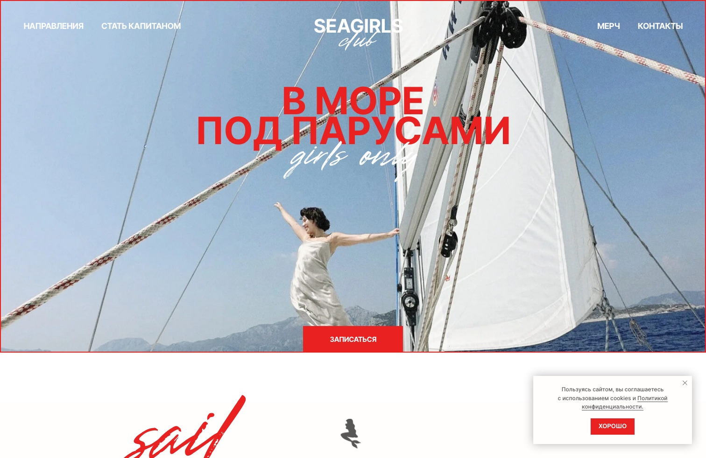
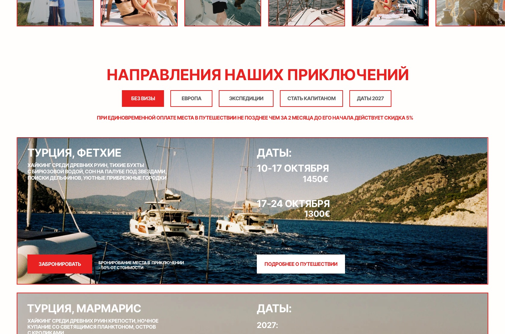
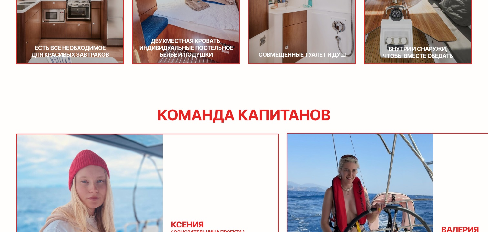
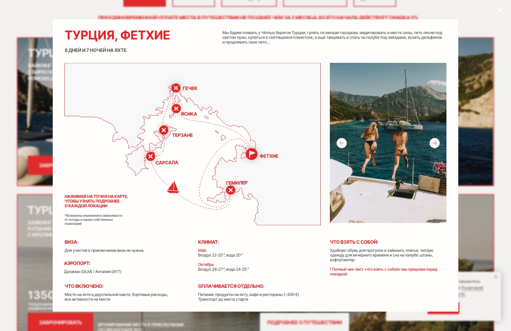

Чтобы девушка из Instagram доходила до заявки, а не до середины страницы.

.mov с Dropbox по временной ссылке; сейчас она отдаёт 404. Дальше страница тянет 190 картинок на 122 МБ. У старых посетителей всё в кэше, у новых — пустой экран и ошибка.
видно 4 из 15
7-й экран · ниже формы записи
попап · у него нет своего адресавиза · аэропорт · что включено · что отдельно@seagirl.club, а профиль — @seagirls.club. Телефон показывает +7 995…, а звонит на +7 993…. Ссылка «Турция, Фетхие» ведёт в редактор Tilda.Видео на сайт вместо Dropbox, сжать картинки, ленивая загрузка (находка 1). Аналитику ставлю я: Метрика, GA4, цели на форму и оплату, UTM. Шрифты, опечатки, дубли, битые ссылки, «оплата не прошла», разметка для поиска.
Блок для новичка, капитаны наверх, что входит в цену, все направления с фильтром без табов, мерч на отдельную страницу, форма с датой.
15 страниц из готовых текстов попапов, блок капитана на каждой, страницы капитанов, оплата в оформлении сайта.
| # | Находка | Где |
|---|---|---|
| 1 | Главная — каталог без истории: с Instagram сразу в 15 направлений | главная |
| 2 | «Капитаны — девушки» — только в одном отзыве и на 7-м экране | главная |
| 3 | Содержание тура в попапе — не индексируется, не шарится, не видно с рекламы | попапы |
| 4 | Табы прячут 11 направлений из 15 | главная |
| 5 | /prepayment без контекста, курс руками, /sorry без выхода, возврат спрятан | оплата |
| 6 | Видео первого экрана (.mov на Dropbox, временная ссылка) отдаёт 404; плюс 190 картинок на 122 МБ — у новых пользователей пустой экран или ошибка | главная, мобильная |
| 7 | Форма без даты и без «что дальше»; четыре контактных поля; лишние направления | форма |
| 8 | Правила оплаты в четырёх местах | везде |
| 9 | «Бортовые расходы входят» на карточке, «еда отдельно» — только в попапе: что входит, видно не сразу | карточки |
| 10 | Не сказано: нужен ли опыт, возраст, плавать, можно ли одной | главная |
| 11 | Мерч — 2,7 экрана между капитанами и FAQ | главная |
| 12 | Клуб капитанов и обучение перебивают путь новичка | главная |
| 13 | «Предложение ограничено, другие скидки не применяются» × 21 | карточки |
| 14 | Весь сайт капсом — следствие бага шрифтов (Script под именем Inter) | везде |
| 15 | Дубли и несостыковки: отзыв ×3, инструктор ×3, телефоны, годы, «дрегие» | школа, главная |
| 16 | FAQ на 11-м экране после мерча | главная |
| 17 | Вёрстка: «Сейшелы» между датами и ценами Мармариса | карточки |
| 18 | Аналитики нет: ни GA, ни GTM, ни Метрики, ни пикселей — только счётчик Tilda | техника |
| 19 | SEO: 184 h2, lang, canonical http, /when 404, description | техника |
| 20 | Cormorant подключён и не используется — блокирует отрисовку | техника |
| 21 | Опечатка 'Sctipt' → текст падает на Arial | техника |
| 22 | Cormorant и лишние скрипты блокируют первую отрисовку | техника |
| 23 | Нельзя дать ссылку «сразу на запись в Турцию»: форма — попап без адреса, оплата — общая страница без выбора тура. Из сторис и рекламы всё ведёт на главную | техника |
| 24 | Instagram в футере — на несуществующий @seagirl.club вместо @seagirls.club | футер |
| 25 | 10 пунктов меню ведут на якоря, которых нет: Контакты, Мерч, О нас, Q&A на главной; Теория, Практика, Экзамен ×2, Инструктор, Сертификат на /school | меню |
| 26 | Телефон в футере показывает +7 995 790 06 35, а звонит на +7 993 270 06 35; номер +7 903 разбит на два элемента | футер |
| 27 | Ссылка «Турция, Фетхие» ведёт на tilda.ru/page/?pageid=… — страница редактора, 404 | карточки |
Yacht Week (смешанные группы, Хорватия, Греция, Сардиния): направление → неделя → категория лодки — Classic / Premium Monohull, Classic / Premium Catamaran, от 719 € за место. Бронь каютой или целой яхтой. Соло — место в двухместной каюте (только Греция и Хорватия) или каюта целиком. Смена даты бесплатно за 90 дней, отмена без вопросов в первые 24 часа, передать место другому — бесплатно.
Solo Female Travelers Club (женский премиум, Хорватия, 48-метровая яхта на 30 человек): от 4 395 € за место в двухместной каюте, 6 995 € за одноместную. Едешь одна — подбирают соседку без доплаты. Список «включено» расписан до строчки «портовые сборы — 60 € с человека»; отдельно — перелёт, трансфер, виза, страховка, чаевые.
Yacht IBIS (Сен-Мартен, Карибы): женские недели с капитаном-женщиной, до 5 гостей на лодке, все уровни опыта вместе; выбор — по дате и направлению. Second Star Sailing (Антигуа): программы Women at the Helm с женщинами-капитанами, но и смешанные тоже; упор на курсы RYA.
Это аналоги, а не прямые конкуренты за русскоязычную аудиторию — у них другой рынок и цены. Что важно для нас: у SeaGirls выбор идёт по одной оси — «куда». У аналогов добавляются неделя, тип лодки и каюты, соседка для соло, честный список «что включено». Выбора по капитану нет ни у кого.